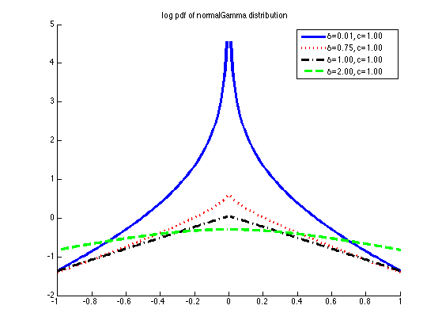
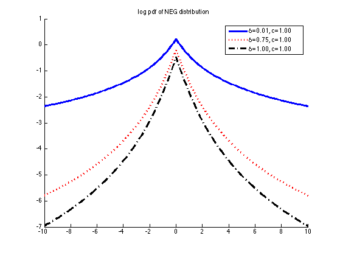

Normal Gamma Distribution Plot
function normalGammaPlotDemo()
xs = -1:0.01:1;
deltas = [0.01 0.75 1, 2];
cs = ones(1,4);
[styles, colors, symbols, str] = plotColors;
str = {};
if 1
f1=figure; hold on
for i=1:length(deltas)
delta = deltas(i);
c = cs(i);
logp = -normalGammaNeglogpdf(xs, delta, c);
str{i} = sprintf('%s=%3.2f, %s=%3.2f', '\delta', delta, 'c', c);
plot(xs, logp, [colors(i), styles{i}], 'linewidth', 3);
end
legend(str)
title('log pdf of normalGamma distribution')
printPmtkFigure('normalGammaLog')
end
str = {};
if 1
figure; hold on
xs = -10:0.1:10;
deltas = [0.01 0.75 1];
for i=1:length(deltas)
delta = deltas(i);
c = cs(i);
logp = -normalExpGammaNeglogpdf(xs, delta, c);
plot(xs, logp, [colors(i), styles{i}], 'linewidth', 3, ...
'displayname', sprintf('%s=%3.2f, %s=%3.2f', '\delta', delta, 'c', c));
end
legend('location','best')
title('log pdf of NEG distribution')
printPmtkFigure('NEGLog')
end
if 0
figure; hold on
a = 0.01; b = 1;
logp = normalExpGammaNeglogpdf(xs, a, b);
ll = LLA(xs, 4, @normalExpGammaNeglogpdf, ...
@normalExpGammaNeglogpdfDeriv, a, b);
plot(xs, logp, 'k-', 'linewidth', 3)
plot(xs, ll, 'r:', 'linewidth', 2);
end
end
function out = LLA(z, bstar, penFn, diffPenFn, varargin)
out = penFn(bstar, varargin{:}) + ...
diffPenFn(bstar, varargin{:})*(abs(z)-abs(bstar));
end
 